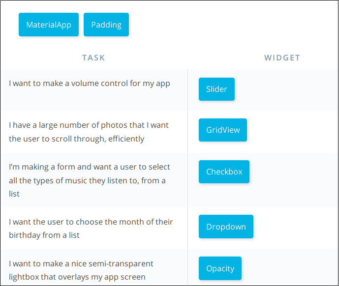
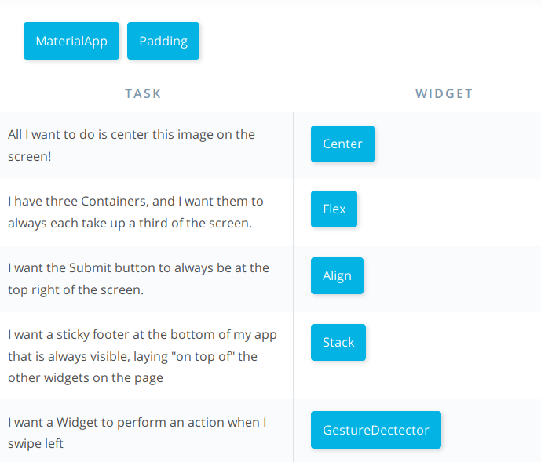

Flutter DevOps
Table of Contents
- 1. Create a project
- 2. Emulator
- 3. Road maps
- 4. Udacity course - basics
- 4.1. Introduction
- 4.2. Why Flutter
- 4.3. Why Dart
- 4.4. Setup your environment
- 4.5. Build a Flutter app
- 4.6. Quiz: Build the Hello Rectangle
- 4.7. Flutter's Reactive Framework
- 4.8. Flutter's Development Tools
- 4.9. The Wonderful Things about Widgets
- 4.10. Quiz: Explore Flutter Widgets
- 4.11. Dissect Hello Rectangle
- 4.12. Build Your Own Widget
- 5. References
This document contains the development blueprints for mobile development with Flutter and Dart with Emacs and console.
1 Create a project
In the selected directory
flutter create <project_name>
2 Emulator
Add the emulator to the path:
export PATH=$PATH:~/Android/Sdk/emulator
List the emulator available devices:
emulator -list-avds
Run the emulator
emulator -avd Pixel_2_XL_API_28 -netdelay none -netspeed full
3 Road maps
3.1 Easy way
This will take advantages of all the infrastructure of the Flutter project
cd <hello_rectangle>
flutter run
To clean the directory tree
flutter clean
3.2 Compile app (Hardway)
Go to the android directory (in this case) or ios for mac
./gradlew assembleDebug
Install the apk file into the emulator
adb install ../build/app/outputs/apk/debug/app-debug.apk
4 Udacity course - basics
4.1 Introduction
4.2 Why Flutter
4.3 Why Dart
4.4 Setup your environment
Set Up Your Environment
You can set up your development environment by following the instructions at https://flutter.io/setup for your operating system.
You can use many IDEs for developing Flutter apps, including Android Studio, IntelliJ, and VSCode. You can find instructions for these IDEs at https://flutter.io/using-ide.
If using Android Studio, please ensure your version is 3.1.x.
You can use a physical iOS/Android device or an emulator. If using an emulator, you can follow the instructions at https://developer.android.com/studio/run/managing-avds. You can select any device and any SDK. If unsure, choose the Pixel 2 and the most recent SDK. You can leave all settings as the default, and you can optionally enable hardware acceleration.
Note: We're using Android Studio 3 and the latest Android SDK at the time of recording.
If you come across any errors, you can try to debug these problems by looking in our Github issues, StackOverflow #flutter tag, and on Gitter. You can also file an issue or ask a question yourself.
Documentation: https://docs.flutter.io/ Github: https://github.com/flutter/flutter StackOverflow: https://stackoverflow.com/questions/tagged/flutter Gitter: https://gitter.im/flutter/flutter
4.6 Quiz: Build the Hello Rectangle
In this exercise, you will build your first Flutter app!
4.6.1 Goals
- Verify you've set up Android Studio.
- Verify that the Flutter plugin has been installed.
- Run an app!
4.6.2 Steps
- Create an app. You can do this using
flutter create hello_rectanglefrom the command line, or by going to File -> New -> New Flutter Project. - Delete the contents of your app's
lib/main.dart. - Paste in the code from
lib/main.dartin the HelloRectangle app into your app'slib/main.dart. - Open your device or emulator, and build and launch the app. You can
do all this using the green Play button in Android Studio. From the
command line, you can also do
flutter runinside your app's project directory.
4.6.3 Specs
- App has a title.
- App Bar has a title.
- Colored rectangle is centered in the app.
- Text is centered in the Container widget, and center-aligned.
Check out the screenshots of what your finished app will look like here.
4.7 Flutter's Reactive Framework
4.8 Flutter's Development Tools
4.9 The Wonderful Things about Widgets
4.10 Quiz: Explore Flutter Widgets
There is a wide range of Widgets available, and it’s important to familiarize yourself with them so you know what to use when designing an app. You may recall some Widgets – Container, Row, Column – but there are lots of other useful ones that have been prebuilt so you don’t have to build them yourself. Consider Checkboxes, Dropdowns, and TextFields!
Here’s a fun scavenger hunt to learn about the different Widgets that Flutter has to offer. Since Flutter is actively being worked upon, new Widgets and custom parameters for each Widget are constantly being created, and you can see them at https://flutter.io/widgets. If there’s a Widget out there that could be improved, file an issue for it, or build it yourself!
4.10.1 Question 1

Figure 1: Quiz: Question 1
4.10.2 Question 2

Figure 2: Quiz: Question 2